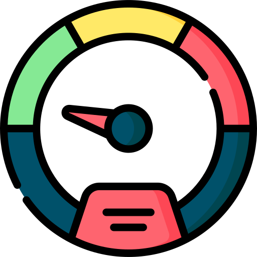
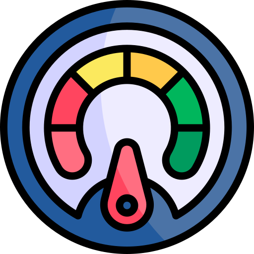
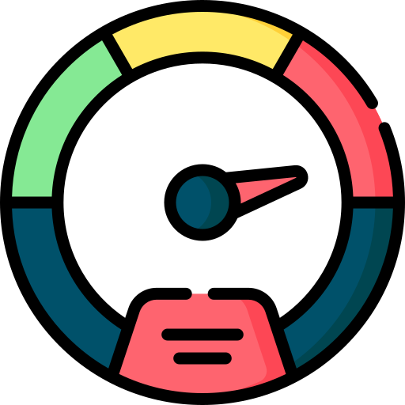

<ion-header>
  <ion-toolbar>
    <ion-segment value="all">
      <ion-segment-button (click)="navigateTo('')" value="favorites">
        <ion-label>Cerrar sesión</ion-label>
      </ion-segment-button>
    </ion-segment>
  </ion-toolbar>
</ion-header>

<ion-content class="background">
  <ion-grid>
    <ion-row>
      <ion-col size="12">
        
      </ion-col>
      <ion-col size="12">
        
      </ion-col>
      <ion-col size="12">
        
      </ion-col>
    </ion-row>

    <!-- <ion-row class="ion-justify-content-center ion-margin-top">
      <ion-col size="12" class="ion-text-center">
        <h1 color="primary">Tabla de posiciones</h1>
      </ion-col>
    </ion-row>

    <ion-row class="ion-justify-content-center button-group">
      <ion-col size="4" class="ion-no-padding">
        <ion-button color="tertiary" expand="full" (click)="navigateTo('tabla-facil')">Fácil</ion-button>
      </ion-col>
      <ion-col size="4" class="ion-no-padding">
        <ion-button color="tertiary" expand="full" (click)="navigateTo('tabla-medio')">Medio</ion-button>
      </ion-col>
      <ion-col size="4" class="ion-no-padding">
        <ion-button color="tertiary" expand="full" (click)="navigateTo('tabla-dificil')">Difícil</ion-button>
      </ion-col>
    </ion-row> -->
  </ion-grid>
</ion-content>

<ion-footer [translucent]="true" collapse="fade">
  <ion-toolbar>
    <ion-title class="ion-text-center">Posiciones</ion-title>
  </ion-toolbar>
  <ion-segment>
    <ion-segment-button value="facil" (click)="navigateTo('tabla-facil')">
      <ion-label>Fácil</ion-label>
    </ion-segment-button>
    <ion-segment-button value="medio" (click)="navigateTo('tabla-medio')">
      <ion-label>Medio</ion-label>
    </ion-segment-button>
    <ion-segment-button value="dificil" (click)="navigateTo('tabla-dificil')">
      <ion-label>Difícil</ion-label>
    </ion-segment-button>
  </ion-segment>
</ion-footer>
